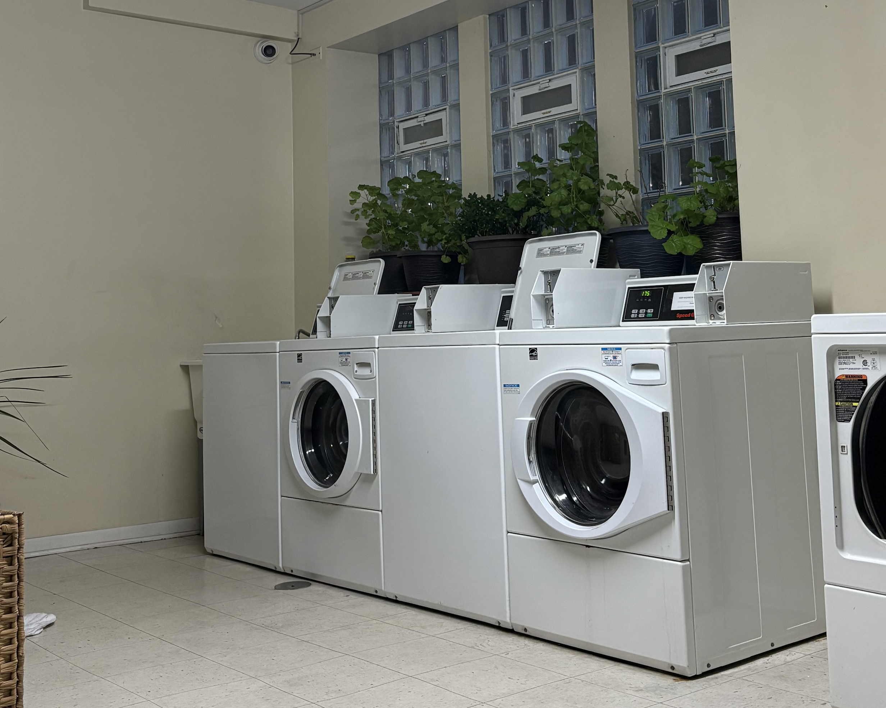
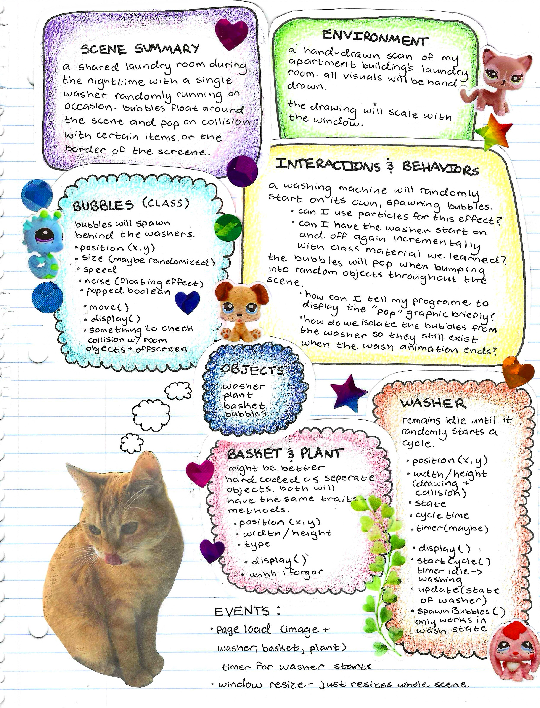
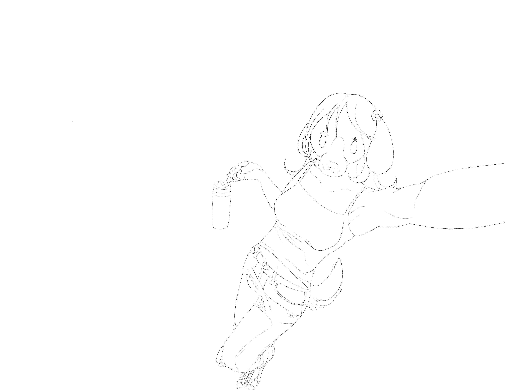

i was so brave today for not bursting into tears over this OOP shit for my midterm. i deserve a million dollars for not crying and making it weird for everyone. also the aesthetics of it looks so chopped. fuck my chud life
Wed Oct 1 2025 1:59pm

this is the image i will print out and trace on a lightboard for my project. looks a bit liminal, doesnt it? like youve been here before?

my midterm project proposal collaged into a piece titled "she didn't think of allat 💀". my cat sticks her tongue out when really focused like her mommy. the goal is to scroll down to this a year later and think to myself, "aww, cute, she tried so hard." hopefully by then i have my cat eugenics game in its beta stages.
Wed Sep 24 2025 7:29am
night walks are part of my routine before bed and i have some of the craziest revelations during them. i was thinking about furry stereotypes - a lot of them are programmers, gym rats, ravers, and artists. it dawned on me that i thoroughly enjoy all of those things and that i cant hide any longer. im like, actually a furry. so then i told my friends about it and they kind of responded to me like a gay child coming out to their generally accepting parents. they were like, yeah, i knew this before you did. whos a good puppy?
Sat Sep 20 2025 11:03pm
this professional practice class is making me want to rip my skin off. no additional comments.
Fri Sep 19 2025 3:42am
this was so stressful to figure out and took hours and hours but i was determined. doug, sorry in advance im late to your class. i hope everyone likes it ^_^ linked below is an additional p5.js exercise experimenting with noise algorithms, or "perlin"
Mon Sep 17 2025 8:49am
okay this shit is ass. i genuinely have no idea why i enjoy this. programming is kind of like a video game that makes you super angry but you still play it anyway because you really like it. i havent had much time to create new graphics that im proud of, so i dug up some old star stamps i made with lino that were scanned in. i was really thorough with my notes, so if i ever want to create something using the same mechanics, i will know what's going on. its not that it doesn't make sense, its just really hard to be a god and create your own rules and conditions and stuff, from scratch in your BRAIN, because if something isn't true, everything breaks :( i intend to push myself to create a sketch that combines several concepts that we were taught because i love my self and i KNOW i can do it!
Mon Sep 15 2025 9:58pm
i feel really bad. my professor is putting a lot of effort into teaching us advanced concepts in p5.js, like nested for loops, object oriented programming, and arrays. it just doesn't stick unless i use it for my own projects. it's my responsibility to make sure doug's lectures don't end in vain. so, im making brand new graphics to play with! i will probably put the pieces here.
Wed Sep 10 2025 1:05pm

wow, my first journal entry! i want to use this page to document some progress on what im working on. sometimes i tend to caught up with superficial things, like my appearance, or focusing too much on pain, or what's "wrong" with me. this page is going to help me recenter. focusing on things i enjoy, which are intertwined with core values of mine, takes me out of my anxious and restless mind. this is halfway-done linework of a puppygirl oc of mine named rosie. she's really adorable!
Wed Sep 10 2025 12:32pm